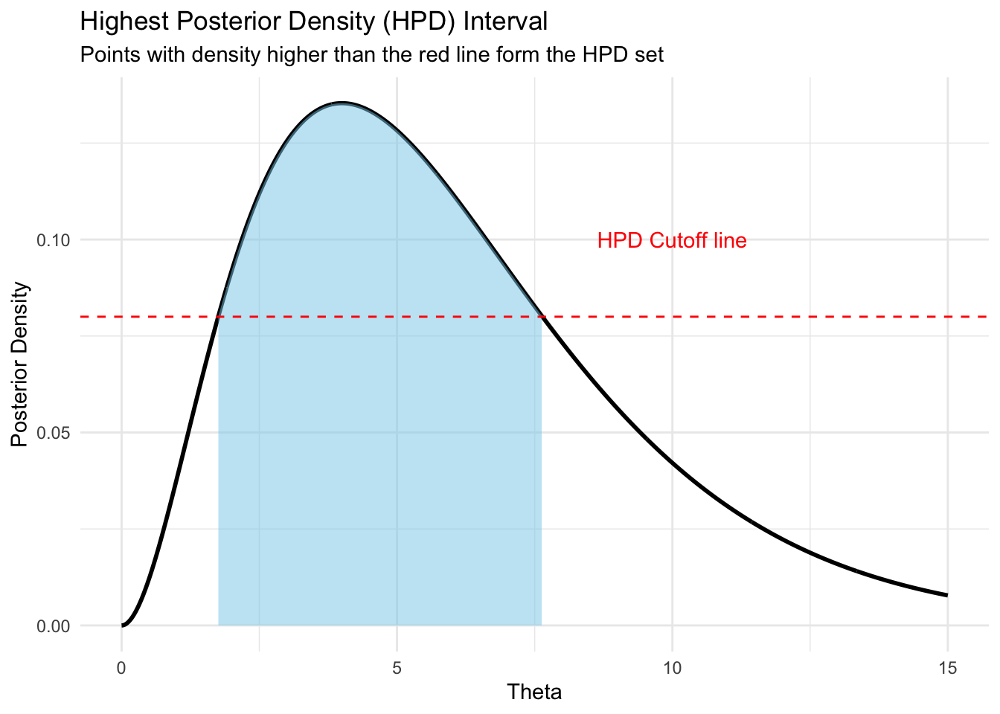
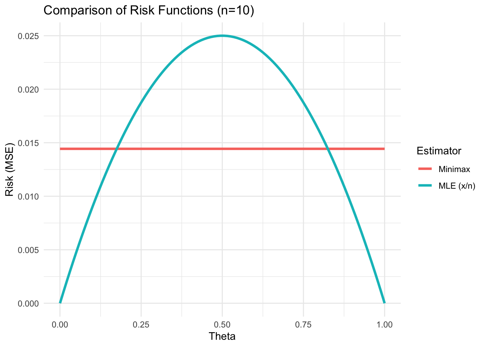
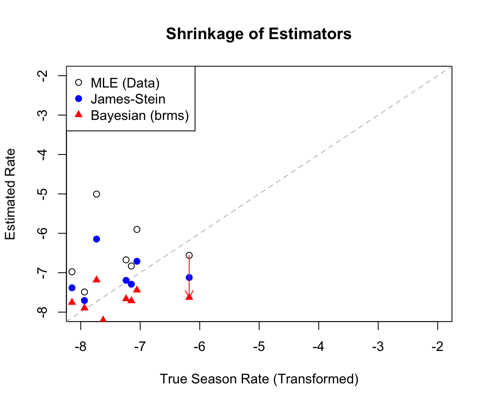

We want an interval \(A = (d-\delta, d+\delta)\) minimizing risk (maximizing coverage probability \(1-\alpha\)).
Highest Posterior Density (HPD) Interval: The set \(C = \{ \theta : \pi(\theta|x) \ge k \}\) where \(P(\theta \in C|x) = 1-\alpha\). This is the shortest interval for a given confidence level if the posterior is unimodal.
Code
library(ggplot2)x <-seq(0, 15, length.out =1000)y <-dgamma(x, shape =3, rate =0.5)df <-data.frame(x = x, y = y)# Approximate HPD cutoff (visual)hpd_level <-0.05cutoff <-0.08# Chosen for visual representation of the cutggplot(df, aes(x, y)) +geom_line(size =1) +geom_area(data =subset(df, y > cutoff), fill ="skyblue", alpha =0.5) +geom_hline(yintercept = cutoff, linetype ="dashed", color ="red") +annotate("text", x =10, y = cutoff +0.02, label ="HPD Cutoff line", color ="red") +labs(title ="Highest Posterior Density (HPD) Interval", subtitle ="Points with density higher than the red line form the HPD set",x ="Theta", y ="Posterior Density") +theme_minimal()

Figure 4.1: Illustration of Highest Posterior Density (HPD) Interval vs Equi-tailed Interval on a skewed posterior.
5 Part 4: Minimax Rules via Bayes
Goal: Find a minimax estimator for \(\theta\) where \(X \sim \text{Bin}(n, \theta)\). Loss: Squared Error \(L(\theta, d) = (\theta - d)^2\).
Strategy: Find a prior \(\text{Beta}(a, b)\) such that the Bayes risk \(R(\theta, d_{\text{Bayes}})\) is constant for all \(\theta\). By Theorem 2.2 (Equalizer Rule), if an extended Bayes rule has constant risk, it is Minimax.
The Bayes estimator is \(d(x) = \frac{a+x}{a+b+n}\). The risk is: \[
R(\theta, d) = E\left[ \left( \theta - \frac{a+X}{a+b+n} \right)^2 \right]
\] Let \(c = a+b+n\). \[
R(\theta, d) = \frac{1}{c^2} \left[ (c\theta - a)^2 - 2(c\theta - a)n\theta + n\theta(1-\theta) + n^2\theta^2 \right]
\]
To make this constant (independent of \(\theta\)), the coefficients of \(\theta\) and \(\theta^2\) must vanish or balance out. Solving the resulting system yields: \[
a = b = \frac{\sqrt{n}}{2}
\]
n <-10theta <-seq(0, 1, length.out =100)# MLE Risk: theta(1-theta)/nrisk_mle <- theta * (1- theta) / n# Minimax Risk: Constant 1 / (4 * (sqrt(n) + 1)^2) ? No, calculation is slightly different# Actually, Risk is constant = 1 / (4 * (sqrt(n) + n)^2) * n ??? # Let's just use the formula derived: 1 / (2*sqrt(n) + 2)^2 approx. # For standard minimax: Risk = 1 / (4 * (sqrt(n) + 1)^2) if we view it as sample size equivalent.# Correct constant risk calculation:risk_minimax_val <-1/ (4* (sqrt(n) +1)^2) # Standard result check# Actually let's compute it numerically to be safea <-sqrt(n)/2b <-sqrt(n)/2denom <- n +sqrt(n)risk_minimax <-numeric(length(theta))for(i in1:length(theta)) { risk_minimax[i] <-sum(dbinom(0:n, n, theta[i]) * ((0:n + a)/denom - theta[i])^2)}df_risk <-data.frame(theta =rep(theta, 2),Risk =c(risk_mle, risk_minimax),Estimator =rep(c("MLE (x/n)", "Minimax"), each =100))ggplot(df_risk, aes(x = theta, y = Risk, color = Estimator)) +geom_line(size =1.2) +theme_minimal() +labs(title ="Comparison of Risk Functions (n=10)", y ="Risk (MSE)", x ="Theta")

Figure 5.1: Risk Functions: MLE vs Minimax for Binomial(n=10).
6 Part 5: Stein Estimation
Context: Estimating a multivariate normal mean \(\mu = (\mu_1, \dots, \mu_p)^T\) where \(X \sim N_p(\mu, I)\). Loss: Sum of squared errors \(L(\mu, d) = ||\mu - d||^2\).
Stein’s Lemma: If \(Y \sim N(\mu, 1)\) and \(h(y)\) is differentiable: \[
E[(Y-\mu)h(Y)] = E[h'(Y)]
\]
James-Stein Estimator:\[
d^{JS}(X) = \left( 1 - \frac{p-2}{||X||^2} \right) X
\] This estimator shrinks the observation vector \(X\) towards the origin (or a grand mean).
Result: If \(p \ge 3\), the James-Stein estimator dominates the MLE (\(d^0(X) = X\)). \[
R(\mu, d^{JS}) < R(\mu, d^0) = p \quad \text{for all } \mu
\]
6.1 Baseball Example (Efron & Morris)
We observe batting averages for \(p=18\) players.
MLE: Individual batting averages.
JS: Shrinks individual averages toward the global average.
Code
# Creating mock data similar to the baseball exampleplayer <-1:10MLE <-c(0.400, 0.370, 0.350, 0.300, 0.280, 0.250, 0.220, 0.200, 0.150, 0.100)GrandMean <-mean(MLE)shrinkage_factor <-0.6# c = 1 - (p-2)/SJS <- GrandMean + shrinkage_factor * (MLE - GrandMean)df_base <-data.frame(player, MLE, JS)ggplot(df_base) +geom_point(aes(x = MLE, y =1), color ="red", size =3) +geom_point(aes(x = JS, y =1), color ="blue", size =3) +geom_segment(aes(x = MLE, y =1, xend = JS, yend =1), arrow =arrow(length =unit(0.2, "cm"))) +geom_vline(xintercept = GrandMean, linetype ="dashed") +annotate("text", x = GrandMean, y =1.1, label ="Grand Mean") +ylim(0.9, 1.2) +labs(title ="James-Stein Shrinkage Effect", subtitle ="Red: MLE, Blue: JS Estimator",x ="Batting Average") +theme_void() +theme(axis.title.x =element_text(), axis.text.x =element_text())

Figure 6.1: Visualizing James-Stein Shrinkage (Mock Data based on Baseball Example). The arrows show MLEs being pulled toward the Grand Mean.
7 Part 6: Empirical Bayes & Hierarchical Models
7.1 Empirical Bayes
Instead of fixing hyperparameters \((\mu_0, \sigma_0^2)\), we estimate them from the marginal distribution of the data. \[
m(x) = \int f(x|\theta) \pi(\theta|\eta) d\theta
\] We estimate \(\eta\) by maximizing \(m(x)\) (Type-II MLE) or method of moments.
Example: If \(X_i \sim N(\mu_i, 1)\) and \(\mu_i \sim N(0, \tau^2)\), then marginally \(X_i \sim N(0, 1+\tau^2)\). We can use \(S = \sum X_i^2\) to estimate \(\tau^2\).
If a conditional distribution is hard to sample from directly:
Propose \(\theta^*\) from a proposal density \(q(\theta^* | \theta^{(t)})\).
Calculate acceptance ratio \(\alpha = \min \left( 1, \frac{f(\theta^*|x)q(\theta^{(t)}|\theta^*)}{f(\theta^{(t)}|x)q(\theta^*|\theta^{(t)})} \right)\).
Accept \(\theta^*\) with probability \(\alpha\).
8 Part 7: Predictive Distributions
We want to predict a new observation \(Y^*\). \[
f(y^* | y) = \int f(y^* | \theta) \pi(\theta | y) d\theta
\]
Numerical Methods: If we have posterior samples \(\theta^{(1)}, \dots, \theta^{(N)}\) from MCMC:
Method 1: Density Averaging\[
\hat{f}(y^* | y) \approx \frac{1}{N} \sum_{i=1}^N f(y^* | \theta^{(i)})
\] This is a Rao-Blackwellized estimator and usually has lower variance.
Method 2: Direct Sampling For each \(\theta^{(i)}\), draw \(Y^{*(i)} \sim f(y^* | \theta^{(i)})\). The histogram of \(Y^{*(i)}\) approximates the predictive density.